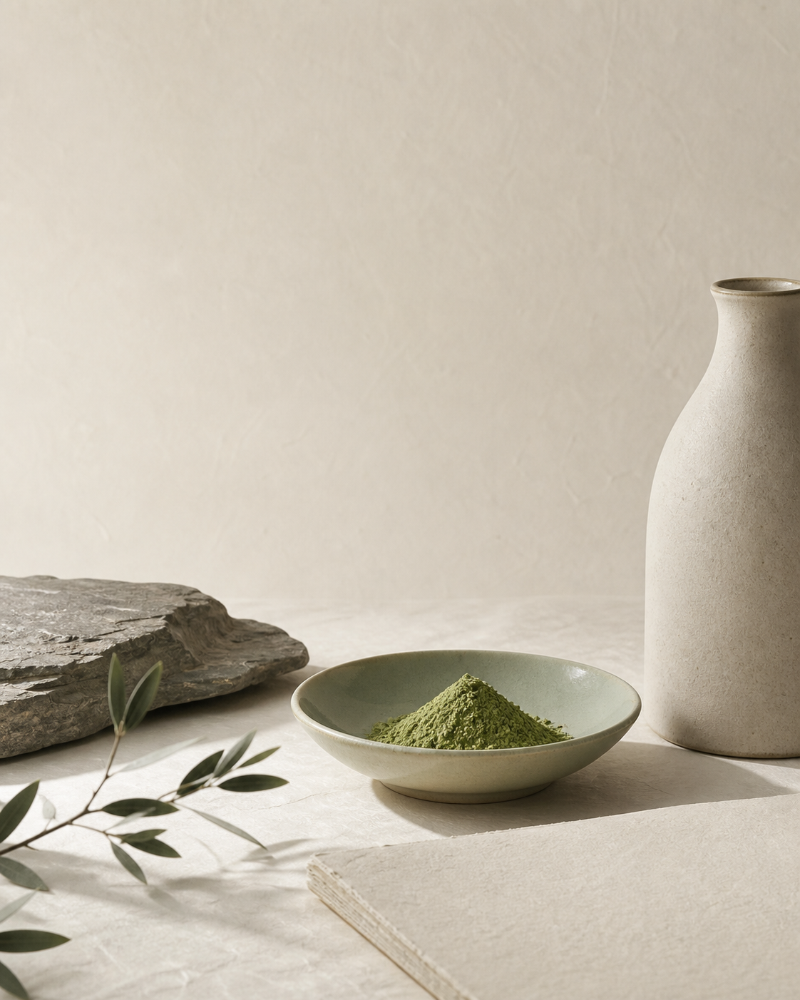

日常调饮
可用于纯抹茶、抹茶拿铁等日常饮用场景。具体用量可按个人口味调整。
Qingwushan Matcha · 40g
从贵州铜仁·印江出发的一罐日常抹茶。一级，净含量 40g，风味标注为海苔香、鲜醇，适合日常调饮、旅行伴手礼与轻量礼赠。

本页只公开已经确认并可由产品资料核对的信息。批次日期、商品条码和最终销售状态以实际产品标签及品牌发布为准。
青雾山采用委托生产模式。运营主体与受托生产企业不是同一主体，官网据实分别标示。
40g 小规格更适合初次尝试、日常少量取用与旅行携带。抹茶并不局限于传统茶席，也可以进入更轻松的现代日常。
可用于纯抹茶、抹茶拿铁等日常饮用场景。具体用量可按个人口味调整。
以铜仁抹茶与梵净山区域文化为线索，适合作为旅行后带回日常的轻量礼物。
统一包装与小规格适合茶空间、咖啡空间、酒店民宿、文旅门店及企业轻礼赠场景。
零售、试销或经销合作可查看首批统一价格体系。
查看经销合作